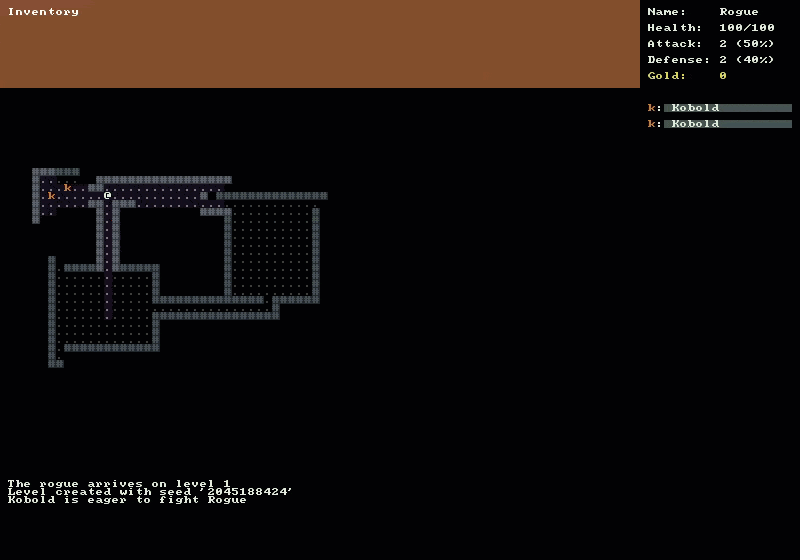

Monster Behaviors
There is going to be a lot of code in this tutorial. We have to start using the scheduling system we built last time. We’ll also be laying the foundation for creating monster behaviors. Our first behavior will be a simple move and attack, but we can expand on this in the future to create lots of interesting monsters.

Defining a Behavior Interface
First we need to define the interface that all of our future Behaviors will use. Create a new file named IBehavior.cs in the Interfaces folder. Add the following code:
public interface IBehavior
{
bool Act( Monster monster, CommandSystem commandSystem );
}
We’re going to keep it simple and just have a simple Act(…) method that will take the Monster performing the action and the CommandSystem as parameters.
Creating a Move and Attack Behavior
Our first concrete behavior that will implement our IBehavior interface will be StandardMoveAndAttack.
Briefly lets go over what the StandardMoveAndAttack behavior will do.
- A monster should perform a standard melee attack on the player if the player is adjacent to the monster.
- If the player is not within attack range, the monster should move closer to the player via the shortest available path.
- Only monsters that are aware of the player should chase him.
- Once the monster is alerted and begins the chase, if the player evades him and remains out of visual range for a period of time the monster should stop pursuit.
- If the monster can see the player but does not have a valid path (possibly because of being blocked by other monsters) it should wait a turn.
Because we want to have many additional behaviors in the future we should make a new folder named Behaviors and then create the file StandardMoveAndAttack.cs in that folder. Add the following code:
public class StandardMoveAndAttack : IBehavior
{
public bool Act( Monster monster, CommandSystem commandSystem )
{
DungeonMap dungeonMap = Game.DungeonMap;
Player player = Game.Player;
FieldOfView monsterFov = new FieldOfView( dungeonMap );
// If the monster has not been alerted, compute a field-of-view
// Use the monster's Awareness value for the distance in the FoV check
// If the player is in the monster's FoV then alert it
// Add a message to the MessageLog regarding this alerted status
if ( !monster.TurnsAlerted.HasValue )
{
monsterFov.ComputeFov( monster.X, monster.Y, monster.Awareness, true );
if ( monsterFov.IsInFov( player.X, player.Y ) )
{
Game.MessageLog.Add( $"{monster.Name} is eager to fight {player.Name}" );
monster.TurnsAlerted = 1;
}
}
if ( monster.TurnsAlerted.HasValue )
{
// Before we find a path, make sure to make the monster and player Cells walkable
dungeonMap.SetIsWalkable( monster.X, monster.Y, true );
dungeonMap.SetIsWalkable( player.X, player.Y, true );
PathFinder pathFinder = new PathFinder( dungeonMap );
Path path = null;
try
{
path = pathFinder.ShortestPath(
dungeonMap.GetCell( monster.X, monster.Y ),
dungeonMap.GetCell( player.X, player.Y ) );
}
catch ( PathNotFoundException )
{
// The monster can see the player, but cannot find a path to him
// This could be due to other monsters blocking the way
// Add a message to the message log that the monster is waiting
Game.MessageLog.Add( $"{monster.Name} waits for a turn" );
}
// Don't forget to set the walkable status back to false
dungeonMap.SetIsWalkable( monster.X, monster.Y, false );
dungeonMap.SetIsWalkable( player.X, player.Y, false );
// In the case that there was a path, tell the CommandSystem to move the monster
if ( path != null )
{
try
{
// TODO: This should be path.StepForward() but there is a bug in RogueSharp V3
// The bug is that a Path returned from a PathFinder does not include the source Cell
commandSystem.MoveMonster( monster, path.Steps.First() );
}
catch ( NoMoreStepsException )
{
Game.MessageLog.Add( $"{monster.Name} growls in frustration" );
}
}
monster.TurnsAlerted++;
// Lose alerted status every 15 turns.
// As long as the player is still in FoV the monster will stay alert
// Otherwise the monster will quit chasing the player.
if ( monster.TurnsAlerted > 15 )
{
monster.TurnsAlerted = null;
}
}
return true;
}
}
Be aware that if you try to Build right now there will be errors. We never added the TurnsAlerted property to our Monster class. Additionally we are missing the MoveMonster method on our CommandSystem.
Note
You may also notice the TODO comment. I discovered a bug in V3 RogueSharp and have a fix for it but for now this is a workaround.
Monster Class Updates
We should make sure we get back to a state where the project will build as quickly as possible. With that in mind open Monster.cs and add a new TurnsAlerted property as well as a PerformAction method that we’ll use later.
public int? TurnsAlerted { get; set; }
public virtual void PerformAction( CommandSystem commandSystem )
{
var behavior = new StandardMoveAndAttack();
behavior.Act( this, commandSystem );
}
Did you notice the question mark on the int? property? That’s shorthand for a Nullable<int> type. Since integers are value types they cannot normally be null, however we want a null integer to represent that the monster has not been alerted.
Notice that the PerformAction method is virtual also. Since this is on our Monster base class, we’ll give any monster the StandardMoveAndAttack behavior by default. We can override this in any of our Monster sub-classes to get more interesting behaviors.
Actor Class Updates
At this point we’re still not building, but we are getting closer. Open Actor.cs and make sure that the Actor class implements IScheduleable so that we can add them to our scheduling system.
public class Actor : IActor, IDrawable, IScheduleable
{
// ... Previous Actor code omitted
// IScheduleable
public int Time
{
get
{
return Speed;
}
}
}
CommandSystem Class Updates
We should get our CommandSystem updated now so we can finally build again. Open CommandSystem.cs and add the IsPlayerTurn property as well as the ActivateMonsters() and MoveMonster(…) methods.
public bool IsPlayerTurn { get; set; }
public void EndPlayerTurn()
{
IsPlayerTurn = false;
}
public void ActivateMonsters()
{
IScheduleable scheduleable = Game.SchedulingSystem.Get();
if ( scheduleable is Player )
{
IsPlayerTurn = true;
Game.SchedulingSystem.Add( Game.Player );
}
else
{
Monster monster = scheduleable as Monster;
if ( monster != null )
{
monster.PerformAction( this );
Game.SchedulingSystem.Add( monster );
}
ActivateMonsters();
}
}
public void MoveMonster( Monster monster, Cell cell )
{
if ( !Game.DungeonMap.SetActorPosition( monster, cell.X, cell.Y ) )
{
if ( Game.Player.X == cell.X && Game.Player.Y == cell.Y )
{
Attack( monster, Game.Player );
}
}
}
The ActivateMonsters() method is intended to be called after the Player takes a turn. This will proceed to get the next scheduled Actor from the SchedulingSystem. If this happens to be the Player again, we’ll wait for the Player to make a move. Otherwise we’ll have the Monster perform an action and then call ActivateMonsters() again recursively. This will keep having Monsters perform their actions until it is once again the Player’s turn.
Add Player and Monsters to Scheduling System
Open DungeonMap.cs and update the AddPlayer(…), AddMonster(…), and RemoveMonster(…) methods to use the SchedulingSystem. Just add the calls at the end of each method.
public void AddPlayer( Player player )
{
// ...previous code omitted
Game.SchedulingSystem.Add( player );
}
public void AddMonster( Monster monster )
{
// ...previous code omitted
Game.SchedulingSystem.Add( monster );
}
public void RemoveMonster( Monster monster )
{
// ...previous code omitted
Game.SchedulingSystem.Remove( monster );
}
Updating the Game Class
We’re almost done. The rest of the updates will be in Game.cs so open up the file and add a new public property.
public static SchedulingSystem SchedulingSystem { get; private set; }
Make sure to instantiate a new SchedulingSystem in the Main() method.
SchedulingSystem = new SchedulingSystem();
The last set of updates will be made in the OnRootConsoleUpdate(…) method. We need to ensure that it is the player’s turn before handling key presses. We also need to activate monsters after the player has taken their turn.
private static void OnRootConsoleUpdate( object sender, UpdateEventArgs e )
{
bool didPlayerAct = false;
RLKeyPress keyPress = _rootConsole.Keyboard.GetKeyPress();
if ( CommandSystem.IsPlayerTurn )
{
if ( keyPress != null )
{
if ( keyPress.Key == RLKey.Up )
{
didPlayerAct = CommandSystem.MovePlayer( Direction.Up );
}
else if ( keyPress.Key == RLKey.Down )
{
didPlayerAct = CommandSystem.MovePlayer( Direction.Down );
}
else if ( keyPress.Key == RLKey.Left )
{
didPlayerAct = CommandSystem.MovePlayer( Direction.Left );
}
else if ( keyPress.Key == RLKey.Right )
{
didPlayerAct = CommandSystem.MovePlayer( Direction.Right );
}
else if ( keyPress.Key == RLKey.Escape )
{
_rootConsole.Close();
}
}
if ( didPlayerAct )
{
_renderRequired = true;
CommandSystem.EndPlayerTurn();
}
}
else
{
CommandSystem.ActivateMonsters();
_renderRequired = true;
}
}
Everything should build now and if you run the game you’ll see that monsters will now chase the player around and attack. The scheduling system that we implemented last time is all hooked up now too.
Code on GitHub
As always the code for the tutorial series so far can be found on GitHub:
Bored waiting for the next tutorial? The complete tutorial project is already finished and the source code is available on Github:
- Sample Roguelike game using RogueSharp and RLNet console
- Sample Roguelike game using RogueSharp and SadConsole
Final Thoughts
This was a long post with a lot of code but it should pave the way for adding more monsters and more interesting behaviors in the future.